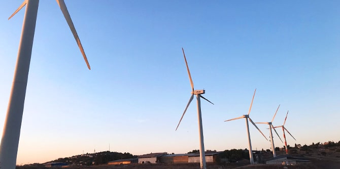

בשנים האחרונות אנו עדים לתופעות אקלימיות חריגות בכל רחבי העולם, ההולכות וגוברות משנה לשנה: סופות הרסניות בהיקפים עצומים, המסת קרחונים, שריפות ענק ובצורות מתמשכות. אירועים אלו משפיעים באופן ישיר על תופעות חברתיות וכלכליות דוגמת התפרצותן של מחלות, מדבור, משבר מזון והגירה רחבת ממדים. הדו"ח החדש (אוגוסט 2021) מטעם הפאנל הבין ממשלתי לשינויי האקלים (IPCC), המסתמך על אלפי מחקרים עדכניים בתחום, מבהיר כי כל אזרח העולם, ויתרה מכך, מי שמבקשים להוביל תהליכי שינוי ולטיוב של החברה שבה אנו חיים, חייב להכיר את תמונת המצב האקלימית והשלכותיה על החברה האנושית ולהבין את משמעות חלון ההזדמנויות הצר שעומד בפני האנושות לשינוי כיוון.
החלטתו של בית הספר לעסוק השנה בנושא הקיימות והאקלים בתוכנית הלימודים הולידה את הרצון לקיים סיור בנושא. נוסף על כך, כמה מעמיתי מחזור כ"ט החליטו לשים דגש מיוחד על נושא משבר האקלים כחלק מתוכנית הלימודים האישית שלהם, והובילו את תכנונו של סיור הלמידה סביב משבר האקלים. המהלך נעשה בשיתוף פעולה עם
ד"ר ליה אטינגר מסגל התוכנית ו-ורד ליבנה, מנחה ותיקה בבית הספר.

מטרתו העיקרית של הסיור שהתקיים בחודש נובמבר האחרון הייתה לחשוף את העמיתות והעמיתים לחומרת המשבר ולדילמות הקשורות בדרכי ההתמודדות עמו. דרך מעבר בתחנות הקשורות לאנרגיה, לטיפול בפסולת ולחקלאות נחשפו העמיתים לפתרונות המוצעים למשבר ולשאלות החברתיות, הכלכליות, הפוליטיות, האתיות והחינוכיות שהוא מציב בפנינו. מעבר לכך, הסיור ביקש לייצר הבנה קונספטואלית של הקשר שבין סוגיות אלו לבין תפיסת העולם שבה אנו מחזיקים אשר לאדם הראוי ולחברה הראויה.
הסיור לקח את משתתפיו למסע בעקבות המשמעויות השונות של קיום מדיניות "איפוס פחמני" במדינת ישראל עד 2050. העמיתות והעמיתים ביקרו, בין היתר, בתחנת הכוח האזורית "אורות רבין" בחדרה ובחוות הרוח במעלה גלבוע, ונחשפו לאופני הייצור של אנרגיה מדלקים פוסיליים – לעומת דרכי ייצור שונות של אנרגיות מתחדשות – ולאתגרים הנלווים למעבר. בסיור הגיעו העמיתות והעמיתים גם אל המרכז למיון פסולת בעפולה ולמדו על הקשר בין פסולת למשבר האקלים. במושב היוגב פגשו חקלאים ויזמים המקדמים חקלאות בת-קיימא מסוגים שונים. במהלך שני ימי הסיור וגם בסיכומו קיימו העמיתות והעמיתים מעגלי שיתוף וחשיבה לשם ניתוח, עיבוד וחשיבה משותפת על משבר האקלים, על השלכותיו ועל תפקידם כמנהיגים חינוכיים בהקשר זה.

אחד התוצרים המשמעותיים של מהלך זה הייתה ההכרה בחשיבות הצורך לשלב קורס חובה בנושא משבר האקלים בתוכנית הלימודים של בית הספר, אשר לו יוקדם סיור לימודי. זאת מתוך ההבנה המהותית שמשבר האקלים הוא אחת הסוגיות המרכזיות שעלינו להתמודד עמן – כעת ובעתיד הנראה לעין.
הסיורים הלימודיים נערכים בבית ספר מנדל למנהיגות חינוכית פעמיים בשנה: בסתיו ובאביב, והם עוסקים בנושא תמטי מתחלף כחלק מתוכנית הלימודים של בית הספר. סיורי הלמידה מפגישים את העמיתים עם פעילות ומנהיגים חינוכיים וחברתיים, ומאפשרים לעמיתים לשכלל את כישורי ההתבוננות וההמשגה שלהם. נוסף על כך, הסיורים מהווים הרחבה לתוכנית הלימודים בתחומים שבהם היא מבקשת להרחיב ולהעמיק את הידע של העמיתים.
ערוץ למידה זה נבנה ומבוצע בשיתוף "צוות מובילי סיור" מקרב העמיתים, שלומד לעומק את נושא הסיור הנבחר ואת המתודיקה של תכנון סיור לימודי. נוסף על הלמידה, ההתרחקות משדה הפעילות המוכר ומן השגרה אל האזור הבלתי פורמלי, מזמנת חוויות משותפות לעמיתי שני המחזורים ולחברי הסגל והצוות, ובכך תורמת לאקלים הארגוני ולקשרים ביניהם.

{kind=link}